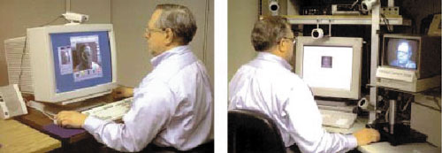
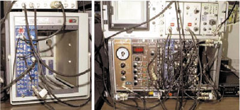

Сергей Гриняев
Главной статьей расхода в разделе бюджета США на 2000 г. "Исследования и разработки" стала программа "Информационные технологии XXI века". В рамках программы планируется увеличить на 366 млн долл. бюджетные ассигнования на внедрение в промышленность знаний из области фундаментальной информатики, а также на подготовку нового поколения специалистов по современным ИТ. В частности, программа предусматривает дополнительные разработки в трех ключевых областях:
- долговременные фундаментальные исследования в области информационных технологий и связи;
- создание принципиально новой вычислительной инфраструктуры для научных и технических исследований;
- анализ экономических и социальных последствий информационной революции.
Среди задач, включенных в утвержденную федеральную программу США "Высокоэффективные вычисления и коммуникации", значится создание хорошо защищенных отказоустойчивых информационных систем (ИС). Интерес к системам такого класса в последнее время значительно возрос, что связано с переоценкой видов и характера угроз, которые могут воздействовать на ИС.
Система с высокой степенью защищенности должна противостоять внутренним и внешним угрозам и воздействиям как естественного, так и искусственного происхождения и поддерживать предсказуемый уровень работоспособности независимо от этих воздействий. Подобная система должна быть устойчива к отказу различных блоков в результате специальных атак, а ответом на повреждение или угрозу должна быть адаптация или реконфигурация структуры системы.
Подобные ИС необходимы сегодня в химической промышленности, в энергетике, в сфере финансовых услуг, здравоохранении, машиностроении, нефтяной и газовой промышленности, транспорте, а также в службах обеспечения безопасности населения и защиты правопорядка.
Задачи и исполнители
На федеральном уровне эти работы курирует Агентство национальной безопасности США (АНБ). Проектными работами руководит Исследовательский совет по вопросам защиты информационных систем (INFOSEC), основная задача которого - координация проводимых исследований с другими проектами, разрабатываемыми Агентством перспективных оборонных исследований (DARPA) и другими лабораториями Министерства обороны, Министерством энергетики, а также Национальным институтом стандартов и технологий (NIST) США.
В программу обеспечения информационной безопасности для высокозащищенных систем входят развитие технологии активной сетевой защиты, безопасного управления сетью, создание новых технологий сетевой защиты, а также исследования в области криптографии и способов реализации защищенной (скрытой) связи.
Активная сетевая защита
Создание активной сетевой защиты базируется в первую очередь на новейших разработках в области защитных функций ИС, используемых Министерством обороны США. Среди последних достижений в этой области - завершение работ по обоснованию минимально необходимой информационной инфраструктуры (MEII) Министерства обороны в ответ на рекомендации Комиссии оборонных исследований. В рамках той же программы специалисты Тихоокеанского института компьютерной защиты Калифорнийского университета (г. Дэвис) разрабатывают инструментальные средства, предназначенные для анализа вторжений в компьютерные сети, и ведут расследование компьютерных преступлений. Они уже разработали новые средства и методы анализа различных типов атак и их источников, а также способы противодействия этим атакам. В ходе работ по этой программе АНБ впервые успешно применило средства визуализации данных PARENTAGE для анализа нападений на компьютерные сети (изначально пакет PARENTAGE создавался как приложение для так называемой сигнальной разведки). Перспективные исследования в области визуального анализа сетевых атак сфокусированы на определении прототипов программ, способных отображать большие наборы разнородных данных в сложных распределенных ИС.
Для защиты компьютерных сетей исследуются и другие возможности технологий сигнальной разведки. Так, ведутся работы по определению сценариев адекватных автоматизированных ответов для различных сценариев вторжения. Разрабатываются методики применения мобильных агентов для обнаружения вторжений и организации ответной реакции компьютерной сети.
Безопасное управление сетью
Разработки в области безопасного управления сетью должны обеспечить формирование инфраструктуры управления защитой, а для этого необходимо создать защищенные протоколы, которые позволят совместно использовать информацию и контролировать все процессы в пределах ИС. По мнению специалистов АНБ, дальнейшее развитие протокола межсетевого взаимодействия и управления ключами (ISAKMP) сможет гарантировать новое качество защиты сети при любых подключениях.
Перспективные исследования в этой области направлены на создание расширенных спецификаций для защищенного Интернет-протокола нового поколения. Именно поэтому АНБ уделяет огромное внимание совершенствованию рекомендаций протокола IPSEC.
Наряду с совершенствованием защищенного механизма маршрутизации и служб управления групповыми ключами необходимо развивать концепцию управления ключами и некриптографические методы защиты при групповой связи. Сейчас стандарт X.509 дорабатывается в части организации работы с цифровыми сертификатами, что позволит улучшить средства управления инфраструктурой открытых ключей шифрования.
Разработка методов сетевой защиты
Основная цель исследований в данной области - защита информации в сетевой среде, для которой характерно не только совместное использование информации, но и глобальное распределение систем и служб. При этом одной из ключевых проблем становится формирование защитного контура на границе ИС, определение точек контроля, управления и защиты от атак из киберпространства.
В настоящее время безопасность границы сети обеспечивается прежде всего такими системами, как межсетевые экраны. Специалисты АНБ уже сегодня широко используют результаты исследований в этой области, чтобы защитить собственные внутренние сети, причем активно привлекают доступные коммерческие средства. По мнению ряда экспертов, дальнейшие исследования позволят создать устройства защиты границы сети, способные фильтровать данные различных протоколов намного эффективнее и производительнее, чем существующие. На решение той же задачи нацелена и программа АНБ, позволяющая оценить эффективность защиты технологий коммутации для сетей с асинхронной передачей данных. Ряд компонентов, повышающих степень защищенности, были включены специалистами АНБ в высоконадежную операционную систему FLUK, разработанную университетом штата Юта.
В рамках дальнейших исследований предполагается моделирование таких дополнительных компонентов защиты, как сервер политики безопасности, сервер взаимодействия служб безопасности и криптографическая подсистема. Планируется также широкое внедрение биометрических технологий идентификации и аутентификации применительно к персоналу, файлам, правилам безопасности и аппаратным средствам.
Другое направление исследований - обеспечение защиты от физического вмешательства в форме установки микросхем со встроенными средствами несанкционированного доступа. Одно из средств такой защиты - специальное покрытие для подложек полупроводниковых кристаллов микросхем, предназначенных для важных информационных платформ.
|  |
| АНБ планирует использовать распознавание трехмерного изображения лица для создания системы контроля доступа нового поколения.
|
Криптография
АНБ - основной национальный эксперт США в области криптографии; специалисты агентства разрабатывают криптографические алгоритмы, которыми пользуются федеральные органы США. Уже много лет в лабораториях АНБ исследуются методы шифрования с открытым ключом. Сегодня усилия сосредоточены на совершенствовании алгоритмов и протоколов управления ключами, на создании быстрых и эффективных арифметических методов, а также на алгоритмах аутентификации.
Пожалуй, наиболее серьезную угрозу для традиционной криптографии сейчас представляет применение так называемых квантовых вычислений для расшифровки информации, в том числе и ключей защиты. Однако, по словам ряда экспертов АНБ, ей можно противостоять, используя современные методы обмена ключей, реализованные на базе квантовой механики. Дополнительно ведутся разработки новых классов криптографических алгоритмов, невосприимчивых к нападениям с использованием методов квантовых вычислений.
Одно из направлений работ АНБ в области криптографии связано с созданием стандартизированных интерфейсов для интеграции криптографических алгоритмов в широко используемое ПО. Созданные специалистами АНБ криптографические интерфейсы прикладного программирования (Cripto API, CAPI) позволяют легко встраивать необходимые защитные функции в приложения разного класса. По сути это дает пользователям возможность самостоятельно выбрать нужный уровень защиты, задавая соответствующий алгоритм. CAPI допускают применение как коммерческих программных алгоритмов (например, компании RSA Data Security), так и специально разработанных в Министерстве обороны США аппаратных технологий (например, Fortezza). В настоящее время в АНБ разрабатываются рекомендации по применению CAPI для различных служб безопасности США.
|  |
| Экспериментальная система квантовой криптографии.
|
Безопасная технология связи
Повышенные требования к методам и инфраструктуре передачи информации предъявляются при возникновении особых ситуаций или во время военных действий. В круг задач, подведомственных АНБ, входят такие технологии повышения надежности и достоверности связи, как кодирование речи, защита в случае беспроводной связи, способы реализации высокоскоростных криптографических механизмов и безопасная передача информации по оптическим сетям.
Разработки в области кодирования речи включают создание алгоритмов, не требующих больших вычислительных ресурсов для оцифровки, шифрования и передачи речевого сигнала по каналу связи.
Исследования в сфере беспроводных коммуникаций ведутся в нескольких направлениях. Во-первых, совершенствуются спецификации беспроводных стандартов. Кроме того, анализируются различные беспроводные технологии, чтобы в критической ситуации можно было выбрать ту, которая гарантирует необходимый уровень защищенности связи. В ходе этих разработок специалисты АНБ в числе прочего создали технологию STU-III, которая обеспечивает защищенную голосовую связь на базе европейской сотовой сети GSM.
Задачи высокоскоростной криптографии включают создание не только микроэлектронных устройств большой производительности, но и эффективных криптографических алгоритмов. Так, недавно в недрах АНБ был разработан 10-гигабитный шифратор для сетей асинхронной передачи данных.
Для оптических сетей АНБ намерено создать принципиально новую концепцию построения полностью защищенной оптической системы. В проект включены, в частности, разработки специальных фотонных коммутаторов и шифраторов, которые должны устранить в канале связи низкоскоростные компоненты.
Живучесть информации
Методы повышения живучести информационных систем направлены на уменьшение количества уязвимостей в сетях и системах национальной вычислительной инфраструктуры, в первую очередь оборонной. Считается, что с помощью систем обнаружения вторжения можно зафиксировать факт нападения на инфраструктуру, оценить нанесенный ущерб и выполнить адекватные ответные действия.
Технологии защиты критически важных, секретных и специальных правительственных систем от атак на (или через) информационную инфраструктуру разрабатываются в Агентстве перспективных оборонных исследований Министерства обороны США. В его задачи входит создание механизмов защиты и устойчивых сетевых протоколов, которые позволят обеспечить непрерывное функционирование системы при атаках извне. Аналогичные работы проводят Национальное агентство по аэронавтике и космическим исследованиям (NАSА) и Национальный научный фонд (NSF). В частности, при финансовой поддержке NSF в Принстонском университете реализуется проект безопасного Интернет-программирования, цель которого - защита мобильных систем, где используются такие технологии программирования, как Java, ActiveX и JavaScript, порождающие коды с немалым числом уязвимостей для возможных атак.
Соглашение по информационной безопасности
Программа National Information Assurance Partnership (NIAP) осуществляется АНБ и Национальным институтом по стандартам и технологиям с середины 1990-х гг. В рамках этой программы летом 1999 г. АНБ и аналогичные ведомства ряда других стран (прежде всего участниц НАТО) заключили соглашение об определении единого набора стандартов тестирования инструментальных средств защиты информации, операционных систем и баз данных, который получил название Common Criteria.
В основу этого соглашения и связанных с ним работ легли исследования американских специалистов по информационной безопасности, материалы которых были опубликованы еще в 1989 г. В них обосновывалась необходимость создания нового международного стандарта, призванного заменить стандарт Министерства обороны США "Критерии оценки надежных компьютерных систем", известный также как "Оранжевая книга". Следует отметить, что "Оранжевая книга" разрабатывалась по особой директиве президента США - PDD-63, которая, собственно, и положила начало работам по обеспечению защиты важных информационных инфраструктур.
Соглашение включает исследование и определение таких факторов, как:
- общая оценка функционирования системы;
- лабораторная оценка уровня защиты системы;
- гарантии непротиворечивости стандартов в области защиты информации;
- оценки степени готовности и уровня защищенности сертифицированных изделий.
Программные технологии и стандарты
Как известно, в институте NIST ведутся фундаментальные разработки в области стандартов по созданию ПО и инструментальных средств его анализа. Применительно к защите информации среди них следует выделить следующие направления.
Определение качества программ, которое проводится на базе новых моделей, а также с помощью специальных методов и инструментальных средств анализа программных процессов. В число стандартных средств включены формальные методы, верификация, оценка функционирования и эталонное тестирование.
Анализ программ, осуществляемый с использованием инструментальных средств как статического, так и динамического анализа программного кода. Основная цель этих процедур - установление соответствия спецификациям и причин отклонения от них.
Оценка надежности программ. Надежность гарантируется технологиями и стандартами программирования, официально утвержденными для применения в продуктах, предназначенных для федеральных и административных структур.
Выработка стандартов программирования. Сюда входит и доработка стандартов структурами NIST с целью удовлетворения требований Администрации США.
России не следует отставать
Очевидно, что правительство США уделяет огромное внимание созданию ИС с высокой степенью защиты. Отчасти это связано с тем, что в ходе исследований были выявлены многочисленные уязвимости национальной информационной инфраструктуры США, которые могут привести - а иногда и приводят - к серьезным нарушениям национальной безопасности. Известно, что компьютерный вирус, содержащий всего несколько десятков строк кода, попав в ИС управления воздушным движением, может за несколько минут парализовать работу любого аэропорта. Если данная ИС не будет иметь специальных средств защиты функционирования, то это грозит опасностью жизням сотен и тысяч авиапассажиров.
К сожалению, в России до настоящего времени разработка специализированных ИС с повышенным уровнем информационной безопасности была областью интереса лишь ограниченного круга специалистов силовых ведомств. В числе причин можно назвать и отсутствие необходимого финансирования, и недооценку возможных последствий информационного терроризма... Но реальность такова, что применение только общедоступных коммерческих систем там, где это связано с возможностью нанесения невосполнимого ущерба, крайне нежелательна и просто опасна.